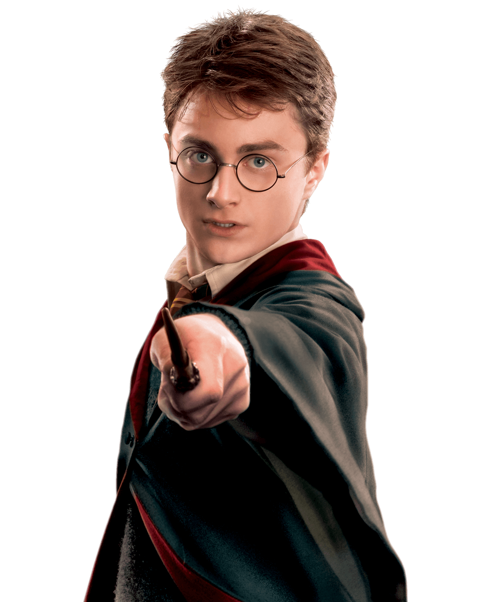

Harry Potter es conocido en el mundo mágico como "El niño que vivió", una figura legendaria cuyo destino estuvo marcado desde la infancia por una oscura profecía.
A una edad temprana, se convirtió en el símbolo de esperanza en la lucha contra Lord Voldemort, el mago oscuro más temido de todos los tiempos. A pesar de haber crecido lejos de la magia y sin conocer su verdadero legado, Harry demostró una valentía y lealtad inquebrantables frente a la adversidad.
Junto a sus inseparables amigos en el Colegio Hogwarts de Magia y Hechicería, enfrentó innumerables peligros, demostrando a lo largo de su viaje que el amor, el sacrificio y la amistad son la magia más poderosa que existe para derrotar a la oscuridad.
Hijo de James y Lily Potter, heredó de su padre el talento natural para volar en escoba, convirtiéndose en el Buscador más joven de Hogwarts en un siglo. De su madre, heredó sus inconfundibles ojos verdes, así como la antigua magia protectora que se activó cuando ella sacrificó su vida para salvarlo.
Tras la épica Batalla de Hogwarts y la caída definitiva del Señor Tenebroso, Harry no buscó la fama, sino que continuó su legado de valentía uniéndose al Ministerio de Magia como Auror. Allí dedicó su vida adulta a cazar magos oscuros rebeldes y mantener la paz en el mundo mágico, formando finalmente una familia junto a Ginny Weasley.